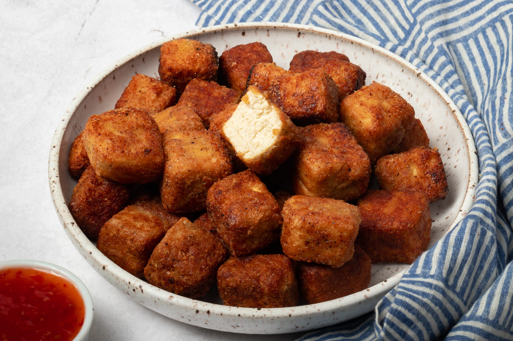

Fried Tofu Nuggets

Description
I literally cannot enjoy tofu any other way. This recipe takes your bland soft tofu and adds a crunch along with slight flavor.
Seriously.. this tastes just like some good ol chicken nuggies
Ingredients
- 1 pack of the most firm tofu you can find
- panko bread crums (italian seasoning optional)
- corn starch
- salt and pepper
Steps
- 1 hour before cooking, start by draining the tofu, wrapping it with a few paper towels
and pressing it under someting heavy. This is done to remove as much liquid from the tofu
- Once an hour has passed, prepare a skillet with 1/2 inch of vegetable oil and set to medium heat
- Cut the tofu block into 1 inch squares
- in a large mixing bowl, add 1 tbspn corn starch, 1 tblspn panko bread crums and lightly season herbs on hand
- toss the tofu cubes in the bowl and lightly mix until evenly covered
- Finally, fry the tofu being careful to not overcrown the pan. turn the tofu over after a few minutes until golden
- once golden on both sides, remove tofu and place in paper towl. add salt to taste and Doneski